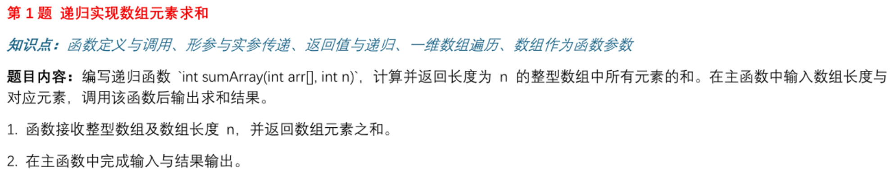
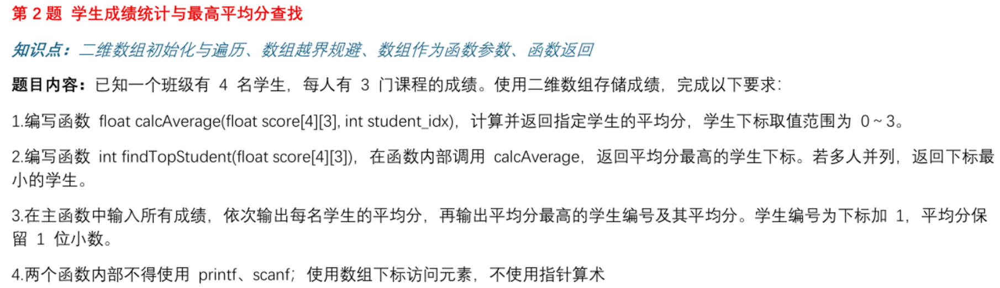
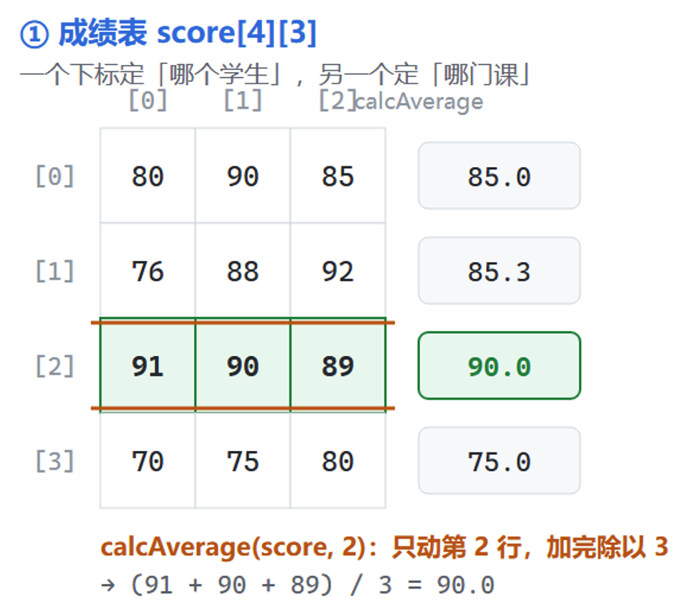
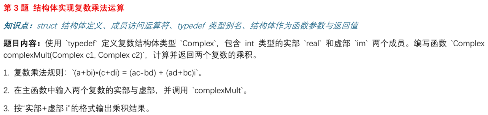
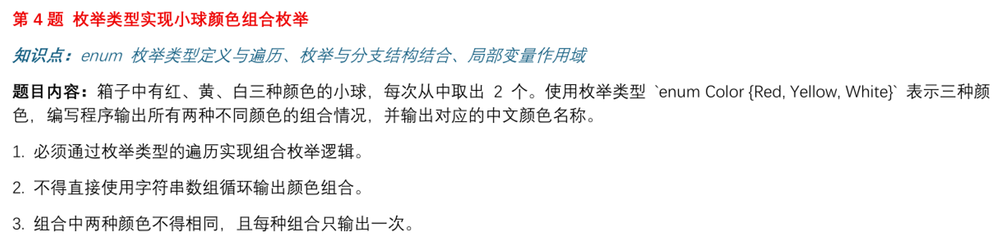
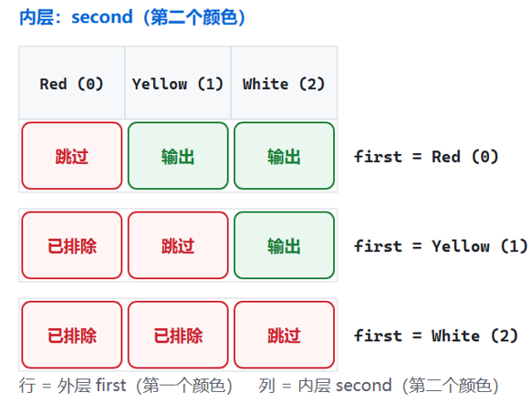
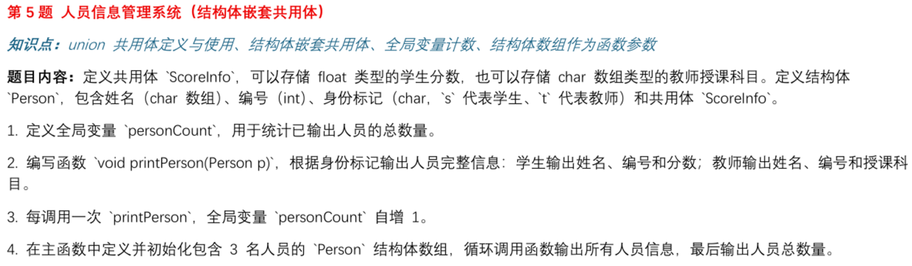
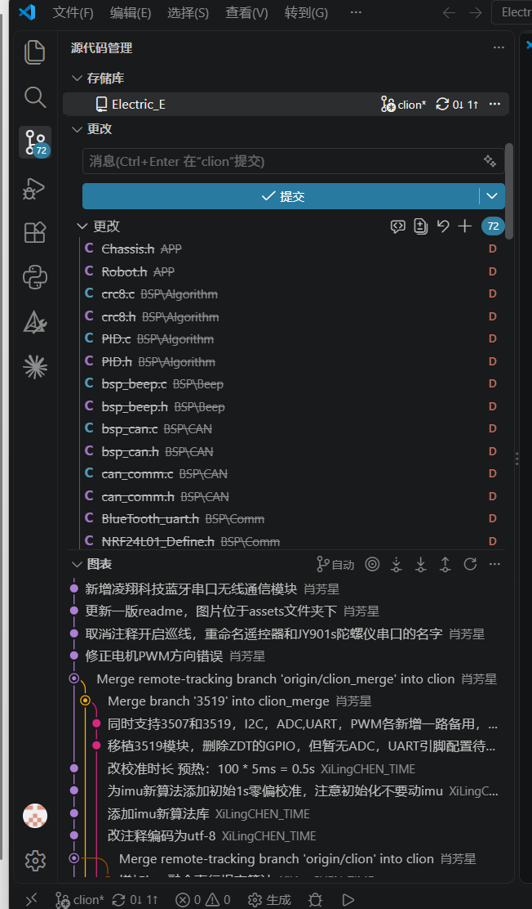
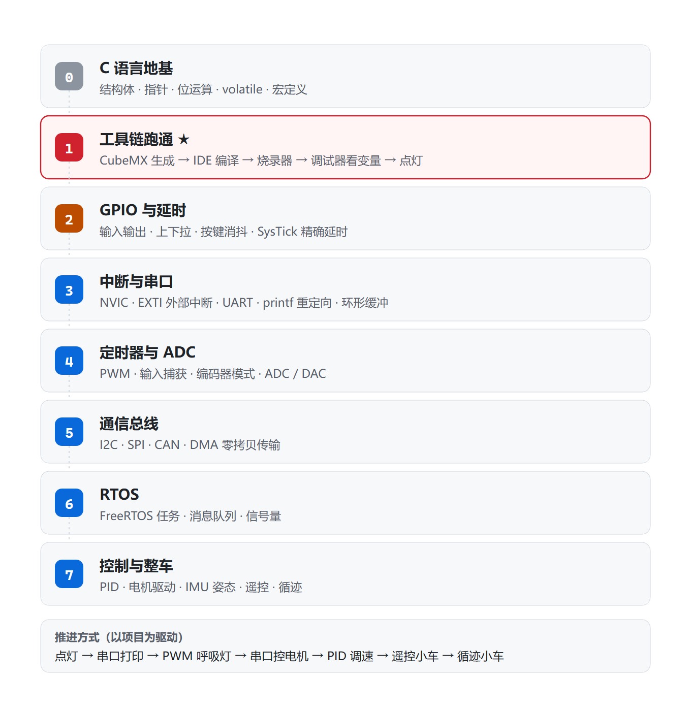

第三次培训：C 语言收尾与嵌入式开发导览
苍穹战队 · 电控组培训｜第二次作业讲评 / C 语言指针与内存模型 / STM32 学习路线
配套源码：第二次作业标准答案
1. 培训总览
本次培训一共 8 个部分，下面是目录：
| # | 内容 | |
|---|---|---|
| 1 | 培训总览 | 整场培训的目录 |
| 2 | 解答一些困惑 | 关于"进度"和"压力"，两句实话 |
| 3 | 第二次作业讲解 | 五道题的思路 + 规范答案源码 + 大家踩过的坑 |
| 4 | C 语言指针与内存模型 | 一条建议 + 精选文章 / 视频 / 书单 |
| 5 | STM32 单片机开发 | 8 层学习路线 + 怎么挑教程 + 资源清单 |
| 6 | 环境疑惑：现场演示 | 现场把"写代码 → 编译 → 烧录 → 灯亮"走一遍 |
| 7 | 常用模块与购买 | 小车常用模块清单 + 怎么挑、去哪儿买 |
| 8 | 答疑环节 | 现场提问 |
2. 解答一些困惑
2.1 关于进度：
不需要太担心自己的进度落后什么的，大家基础都差不多，都是会C语言和单片机点灯
学的快不代表扎实
大家还是抱有很强的竞争意识，但我们更需要的是关注自身进步和团队协作的人
真正会淘汰人的不是"进度慢"，而是"断掉不学了 进度慢可以补，断了就很难重来。
2.2 关于压力
- "进度有点快，有点不知道该学哪方面"
- "要学的太多，太忙了"
- "时间不够，好多课都将期中考试了"
- "害怕进度太快跟不上，又怕太慢来不及"
- "跟不上作业进度了 😰"
- "老大我们战队招人名额多少啊，我们认真学但好怕被同级那些有基础的拉爆啊 😭"
- "感觉 500 元有点紧"
我的建议是，大家在前期学习的时候，先带着不求甚解的态度去学
你太想知道为什么了，太想知道具体的细节以及为什么会是这样，不完全搞明白就浑身不舒服那样
你快速过一遍主干和核心的东西，先不用完全搞明白，大概脑海里有个框架，然后需要细究里面一些东西的时候，在扎进去弄明白
| 诉求 |
|---|
| "想了解 stm32 的教学 / 需要学什么" |
| "不知道怎么在 CLion 上写代码以及烧录工具 / 用什么实体工具" |
| "stm 的扩展包并没有显示在 keil 上面" |
| "买的板子跟教程不一样 / 教的不是 HAL 库 / 找不到适合自己的教程" |
| "不会用 AI 提问"、"想推荐一些好的博主" |
| "怎么将练习的内容具体到小车的实践上" |
| "不会用电烙铁 / 焊接"、"整车电控布局" |
3. 第二次作业讲解
第一题

递归的好处就在于，用尽可能简洁且少量的代码，以及优异的时间和空间复杂度，就可以实现原本需要一大段代码且运行效率还不高的代码
思路：
- 定义终止条件
- 编写每一轮要做的事情
- 提前相信你这个函数就能实现这个逻辑（类似高中数学的数学归纳法）
核心代码就两行：
int sumArray(const int arr[], int n){
if (n <= 0) {return 0;}//终止条件
return arr[n - 1] + sumArray(arr, n - 1);
}
把 n = 3 的调用展开看：
sumArray(arr, 3)
└─ arr[2] + sumArray(arr, 2)
└─ arr[1] + sumArray(arr, 1)
└─ arr[0] + sumArray(arr, 0)
└─ 0 ← 撞上出口
出口写 n <= 0，不要只写 n == 1 或 n == 0。
- 只写
n == 0：调用者传负数时无限递归 → 栈溢出 → 程序直接崩。 - 只写
n == 1：空数组（n = 0）时会走到"没有return的分支"， 返回一个不确定的值（未定义行为）。这不是"结果不对"，是"结果随机"。
扩展题：用递归实现n的阶乘/斐波那契数列
有兴趣深入了解的可以看看这两个视频：
有个说法：“「递归」是检验编程天赋的试金石”；而本视频打破天赋壁垒，助你快速掌握递归。
第二题


要拆成两个函数
calcAverage(score, i)—— 只回答一个问题："第 i 个学生的平均分是多少？"findTopStudent(score)—— 只回答一个问题："谁的平均分最高？" 它通过反复调用前一个函数来回答。
两个函数都可以被别的程序直接调用、可以单独测试。
为什么题目要禁止函数里用 printf/scanf
- 一旦
calcAverage里混进printf，它就只能当"给人看的程序"用， 没法被别的模块调用，也没法拿一批测试数据自动验证对错。 - 在 STM32 工程里，驱动层函数里出现
printf是典型的设计错误——printf函数开销非常大，在中断里打印会直接拖垮整个系统。
持续更新最高分
先让第 0 号当最高：top_idx = 0, top_avg = calcAverage(score, 0)
从 1 号开始逐个挑战：谁比我高，谁就当新最高
遍历结束，最高的的就是答案
第三题

难度不大，看答案源码自行理解
这里其实带有一点点“面向对象”思想在里面了，通过结构体把一组数据封装成一个具体的对象（理解不了对象就当成一种模板）
然后再在主程序需要这个对象的时候把这个对象声明出来
同时，编写 ComplexMult这种接口函数去操作这个对象里面的参数
比如，我封装好了一个电机的结构体对象，里面包含了电机转速，电流，角度等参数
我的底盘一共有四个电机，那么我就声明四个电机对象
第四题

枚举的意义：让数字有名字。
写 White 永远比写 2 清楚。看到 2 得回头查一遍定义，看到 White 不用。
关键：内层循环从 first + 1 开始。
for (second = (Color)(first + 1); second <= White; second = (Color)(second + 1))
这一个写法同时解决两个要求：
- 排除了同色（自己不会跟自己组合）；
- 排除了重复（不会既输出
红+黄又输出黄+红）。
如果内层从 Red 开始、再加一句 if (first != second)，三种组合会变成六种。

第五题

共用体是"同一块内存，两种解释"
ScoreInfo（取两个成员中较大的那块空间）
┌──────────────────────────┐
学生 │ float score │ ← identity = 's'，按 float 读
├──────────────────────────┤
教师 │ char subject[32] │ ← identity = 't'，按字符串读
└──────────────────────────┘
↑
靠 Person.identity 这个"标签"决定怎么读
"同一段数据、根据标志位做不同解释"： 协议解析（同一个缓冲区按不同报文类型解析）、寄存器位域复用、 事件联合体（一个事件结构体承载多种事件参数）。
普遍问题
-
没有落实到"多文件"（最普遍的问题）。 题目最后一段明确要求"将每道题的全部源文件（
.c及需要的.h）和编译生成的可执行文件独立文件夹"。 STM32 工程动辄几十上百个文件，不可能全塞进main.c。。 -
源码中完全没有注释。
-
用变长数组
int arr[n]。
n 很大时会一次性在栈上开一大块，直接爆栈——这在 STM32 上是致命问题。
→ 规范做法：#define MAX_N 100 + int arr[MAX_N] + 输入时做范围检查；需要动态大小就用 malloc/free。
-
文件名不规范（不少同学）。
未命名1.c、源.c、Untitled-1.c、1.c / 2.c / 3.c -
变量命名。 如
sunxiaochuan、caixukun、jinitaimei。 用a、b、x、temp表示"学生的平均分"。 命名的标准是：半年后你自己还能看懂。 -
.c还是.cpp。
练习资料
对一些算法/刷题感兴趣的可以到力扣 (LeetCode) 等平台找一些题目练习一下，对逻辑思维能力有一定帮助，同时，也可以看一些关于数据结构和算法的内容（见教程网站：数据结构与算法 - 苍穹战队Robomaster电控组培训）
4. 补充
（知乎 / CSDN/问AI即可，搜索引擎能筛出更好的）：
- 搜"C 语言 内存四区 栈 堆 静态区"
- 搜"C 语言 指针 数组 区别 指针算术"
- 搜"C 语言 野指针 悬空指针 内存泄漏"
- 搜"C 语言 内存对齐 struct 大小"
C语言中内存布局(内存模型)是怎样的? - freshman_xy - 博客园
关于git使用
Git+Github核心概念大串讲，从零到一全攻略，详细实战教程
这里推荐可以使用Clion/Vscode内部自带的git工具，版本流程很明显，代替终端敲命令/合并分支解决冲突很方便

5. STM32 单片机开发
5.1 学习路线

正确姿势是以项目为驱动
5.2 关于教程
跟学习指南上推荐的课程有出入，要么板子不一样，要么教的不是 HAL 库，不能很顺畅地学习。
| 判据 | 怎么检查 | 不满足怎么办 |
|---|---|---|
| ① 芯片型号一样或同系列 | 教程用 F103，你的板子是 F103 还是 F407？ | 型号不同不是换教程的理由——F1 和 F4 的 HAL 库接口几乎一样，差异自己查手册补。 |
| ② 库类型一样 | 教程用 HAL 还是标准库？ | 看函数名前缀：HAL_GPIO_WritePin 是 HAL；GPIO_SetBits 是标准库。选定一种就别混着学。 |
| ③ 板子引脚对得上 | 教程的 LED 是 PA5，你的板子是吗？ | 去查你自己板子的原理图，看 LED / 按键 / 串口引脚，改 CubeMX 里的引脚配置。 |
QQ公告网站已有大量教程，本次培训的目的还是在于解决大家动手实操的问题，以及遇到的一些教程里不会讲的问题
5.3 理解开发板，原理图
拿到任何一个开发板，都要学会看手册，看手册！
然后是看原理图
举例：（见教程视频）
5.4 资源推荐
- ST 官网：https://www.st.com/
- STM32 中文社区：https://shequ.stmicroelectronics.cn/
-
【立创开发板】简介 | 立创开发板技术文档中心：https://wiki.lckfb.com/zh-hans/products/
-
RoboMaster 官网：https://www.robomaster.com/
- GitHub 搜索
robomaster 电控/robomaster embedded，能搜到大量战队开源代码。 - 下载一些优秀的代码框架，然后从中学习如何组织一个大的项目工程
5.5 关于HAL库
结论：先用 HAL 把东西跑起来，再按需下沉到寄存器。
-
没有人从零手写寄存器配置——那是浪费时间。
-
你不需要背下所有的API，遇到不会的就查需要哪个API，
6.硬件部分
掌握基本的画简单分电板，拓展板的能力
不强求，不需要达到设计硬件的水平
以及看懂原理图的水平
10分钟入门PCB电路设计！保姆级STM32最小系统板全流程！
适当了解一些硬件知识对你的电控之路是非常有帮助的
7. Keil / CLion + ozone环境演示
照顾到大多数人都还是在点灯或者stm32入门的环节，这里主要帮大家演示一下环境问题：
8. 常用模块与购买
8.1 模块清单
| 类别 | 模块 / 器件 | 作用 | 参考链接 |
|---|---|---|---|
| 主控 | STM32F103C8T6 最小系统板 | 入门首选，便宜、资料最多 | |
| 主控 | STM32F407 开发板 | 比赛主力，性能强、外设多 | |
| 烧录 / 调试 | ST-Link V2 / J-Link | 下载程序 + 打断点调试 | |
| 电源 | XT60 插头 | 整车供电 | |
| 电源 | 降压模块（LM2596 / MP1584） | 降到 5V / 3.3V 给主控和传感器 | |
| 电源 | 锂电池电压检测 / 分压电阻 | 电池电量监测 | |
| 电机 | 直流减速电机 + 驱动模块（TB6612 / DRV8701 / L298N） | 入门小车用，便宜 | |
| 电机 | MG996R / DS3218 舵机 | 转向、云台 | |
| 传感 | IMU（BMI088 / ICM42688 / MPU6050） | 姿态解算，闭环控制必需 | |
| 传感 | 超声波 HC-SR04 / 激光测距 TOF | 避障、测距 | |
| 传感 | 增量式编码器 | 测速，做 PID 必需 | |
| 通信 | HC-05 / HC-06 蓝牙模块 | 手机遥控、调试 | |
| 通信 | ESP8266 / ESP32 模块 | WiFi 遥控、上位机通信 | |
| 通信 | CAN 收发器 TJA1050 / SN65HVD230 | 与电调通信 | |
| 显示 | OLED 0.96（SSD1306） | 显示调试信息，非常好用 | |
| 基础 | 洞洞板 / 杜邦线 / 排针 / 排母 | 搭电路 | |
| 基础 | XH2.54 / PH2.0 端子 + 压线钳 | 做正经接线，比杜邦线可靠 | |
| 基础 | 开关 SS12D00 / 自锁按钮 | 电源开关 | |
| 工具 | 电烙铁 + 焊锡 + 助焊剂 + 热缩管 | 焊接（后续单独安排教学） | |
| 工具 | 万用表（必备）/ 示波器（进阶） | 排障 |
8.2 怎么找、怎么买（这部分比清单本身更重要）
渠道
| 渠道 | 特点 | 适合买什么 |
|---|---|---|
| 立创商城 https://www.szlcsc.com/ | 元件型号全、有数据手册、正品 | 电阻电容、芯片、接插件、模块 |
| 嘉立创 https://www.jlc.com/ | PCB 打样 + SMT 贴片 | 自己画的板子（进阶） |
| **淘宝 ** | 便宜、快 | 杜邦线、洞洞板、模块（注意甄别） |
| 得捷 / 贸泽 | 正品、贵、慢 | 关键器件、怕买到假货的东西 |
挑模块的四条判断标准
- 主芯片型号明确。 看到"XX 功能模块"但主芯片被磨掉型号的，别买。
- 有公开的原理图或资料包。 店家给资料包（原理图 + 例程）的，价值远高于没有的。
- 标注了工作电压和通信电平。 。
- 有销量和评价，最好有实测反馈。。
搜索关键词怎么写
- 不要搜"STM32 小车模块"，要搜具体型号：
STM32F103C8T6 最小系统板、TB6612 电机驱动模块。 - 找数据手册：
<芯片型号> datasheet或<芯片型号> 数据手册 pdf。 - 找别人的用法：
<模块名> STM32 HAL 例程。